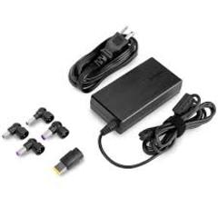
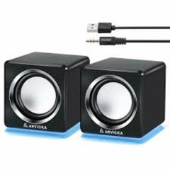
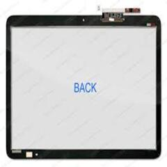

Se le daran a presentar accesorios que son utiles para nuestras laptops, para que tengan un buen funcionamiento y rindan de la mejor manera
Cargadores Universales: el cargador es una de las partes mas importantes de nuestra laptop, ya que con el, mantenemos encendida nuestra laptop, y asi siendo un cragador universal, tiene diferentes entradas para que asi no hay ningun problema con ninguna entrada de alguna laptop.
Bocinas: es una accserio que se conecta a la laptop para reproducir cualquier tipo de sonido, ya que con ellas se escucha mas fuerte el sonido de lo nomal, ya que las bocinas internas que trae la laptop no suenan tan fuerte, en cambio estas si suenan fuerte.
Funda: es una accesorio bastante importante para poder andar bien cubierta nuestra laptop, y no sufra ya sea algun golpe, o algun rayon o rasguño, y no tengamos que tener que estar viendo esa parte que ha quedado mal por algun golpe.
Entre otros accesorios que son importantes para cuidar y dar mejor rendimiento a nuestras laptops.
  